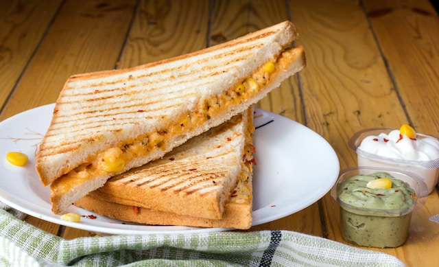

Back to Home
Garlic Cheese Sandwich

There's nothing like warm cheesy garlic sandwich
Learn how to make a grilled cheese sandwich in a
nonstick pan with buttered bread and American Cheddar
for a classic hot sandwich.
Ingredients
- 4 slices white bread
- 3 tablespoons butter, divided
- 2 slices Cheddar cheese
Directions
- Preheat a nonstick skillet over medium heat.
Generously butter one side of a slice of bread.
Place bread butter-side down in the hot skillet;
add 1 slice of cheese. Butter a second slice of
bread on one side and place butter-side up on top
of cheese.
- Cook until lightly browned on one side; flip over and
continue cooking until cheese is melted. Repeat with
remaining 2 slices of bread, butter, and slice of cheese.